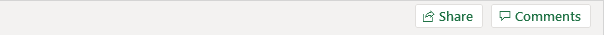

Introduction
Range
Gunakan IsiOtomatis di Excel untuk mengisi serangkaian sel secara otomatis. Halaman ini berisi banyak contoh IsiOtomatis yang mudah diikuti. Langit adalah batasnya!
Misalnya, masukkan nilai 10 ke dalam sel A1 dan nilai 20 ke dalam sel A2.

Pilih sel A1 dan sel A2 dan seret gagang isian ke bawah. Pegangan isian adalah kotak hijau kecil di kanan bawah sel yang dipilih atau rentang sel yang dipilih.

Catatan: IsiOtomatis mengisi angka berdasarkan pola dua angka pertama.
Masukkan Jan ke sel A1.

Pilih sel A1 dan seret gagang isian ke bawah. IsiOtomatis secara otomatis mengisi nama bulan.

Masukkan Produk 1 ke dalam sel A1.

Pilih sel A1 dan seret gagang isian ke bawah. IsiOtomatis secara otomatis mengisi nama produk.

Masukkan Friday ke sel A1.

Pilih sel A1 dan seret gagang isian ke bawah. IsiOtomatis secara otomatis mengisi nama hari.

Masukkan tanggal 14/1/2019 ke dalam sel A1.

Pilih sel A1 dan seret gagang isian ke bawah. IsiOtomatis mengisi hari secara otomatis.

Alih-alih mengisi hari, gunakan opsi IsiOtomatis untuk mengisi hari kerja (mengabaikan hari akhir pekan), bulan (lihat contoh di bawah) atau tahun.

Catatan: lihat juga opsi untuk mengisi pemformatan saja dan untuk mengisi rangkaian tanpa pemformatan.
Masukkan tanggal 14/1/2019 ke dalam sel A1 dan tanggal 21/01/2019 ke dalam sel A2.

Pilih sel A1 dan sel A2 dan seret gagang isian ke bawah. IsiOtomatis secara otomatis mengisi tanggal berdasarkan pola dua tanggal pertama.

Masukkan waktu 6:00 pagi ke sel A1.

Pilih sel A1 dan seret gagang isian. IsiOtomatis mengisi waktu secara otomatis.

Jika Excel tidak mengenali daftar, cukup buat daftar kustom .


Gunakan flash fill di Excel 2013 atau yang lebih baru untuk mengekstrak secara otomatis atau menggabungkan data secara otomatis.


Jika Anda memiliki Excel 365, Anda juga dapat menggunakan fungsi SEQUENCE untuk mengisi serangkaian sel. Fungsi ini cukup keren.
Fungsi SEQUENCE di bawah ini menghasilkan array dua dimensi. Baris = 7, Kolom = 4, Mulai = 0, Langkah = 5.

Fungsi SEQUENCE di bawah ini menghasilkan daftar angka ganjil. Baris = 10, Kolom = 1, Mulai = 1, Langkah = 2.

Catatan: fungsi SEQUENCE, dimasukkan ke dalam sel A1, mengisi beberapa sel. Wow! Perilaku ini di Excel 365 disebut menumpahkan.
Sangat mudah untuk membuat segala macam urutan di Excel. Misalnya, barisan Fibonacci.
1. Dua angka pertama dalam deret Fibonacci adalah 0 dan 1.

2. Setiap bilangan berikutnya dapat ditemukan dengan menjumlahkan dua bilangan sebelumnya.

3. Klik di sudut kanan bawah sel A3 dan seret ke bawah.
Hasil. Deret Fibonacci di Excel.

Jika Anda membuat daftar kustom di Excel, Anda dapat dengan mudah mengisi rentang dengan daftar departemen, klien, kota, nomor kartu kredit Anda sendiri, dll. Ini dapat menghemat waktu dan mengurangi kesalahan.
Pertama, kita akan melihat contoh daftar bawaan.
1. Ketik Sun ke dalam sel B2.

2. Pilih sel B2, klik di sudut kanan bawah sel B2 dan seret ke sel H2.

Bagaimana Excel mengetahui hal ini?
3. Pada tab File, klik Opsi.
4. Di bawah Lanjutan, buka Umum dan klik Edit Daftar Kustom.

Di sini Anda dapat menemukan daftar 'hari dalam seminggu' bawaan. Perhatikan juga daftar 'bulan dalam setahun'.
5. Untuk membuat daftar kustom Anda sendiri, ketik beberapa entri daftar, dan klik Tambah.

Catatan: Anda juga dapat mengimpor daftar dari lembar kerja.
6. Klik Oke.
7. Ketik London ke dalam sel C2.

8. Pilih sel C2, klik di sudut kanan bawah sel C2 dan seret ke bawah ke sel C5.

Catatan: daftar kustom ditambahkan ke registri komputer Anda, sehingga Anda bisa menggunakannya di buku kerja lain.
Sisipkan komentar di Excel 2019 untuk memulai percakapan atau memberikan umpan balik tentang konten sel. Komentar gaya lama masih tersedia dan sekarang disebut catatan.
Untuk menyisipkan komentar , jalankan langkah-langkah berikut.
1. Pilih sel.
2. Klik kanan, lalu klik Komentar Baru.

Tips: untuk menyisipkan komentar gaya lama, klik Catatan Baru.
3. Ketik komentar Anda dan posting.

Excel menampilkan indikator ungu di sudut kanan atas sel.
4. Arahkan kursor ke sel untuk melihat komentar.

5. Untuk mengedit komentar, arahkan kursor ke komentar dan klik Edit.

6. Orang lain sekarang dapat membalas komentar Anda.

Tips: gunakan OneDrive untuk berbagi file Excel Anda dengan orang lain.
Untuk menghapus komentar, jalankan langkah-langkah berikut.
1. Pilih sel dengan komentar.
2. Klik kanan, lalu klik Hapus Komentar .

Untuk melihat semua komentar dalam file Excel, jalankan langkah-langkah berikut.
1. Pada tab Tinjau, di grup Komentar, klik Perlihatkan Komentar.

Tips: daripada menggunakan tab Tinjau, cukup klik tombol Komentar di sudut kanan atas pita.

Excel membuka panel Komentar dengan semua komentar dalam file Excel ini.

Tips: Anda juga dapat menggunakan panel ini untuk mengedit, membalas, dan menghapus komentar.
Terkadang berguna untuk menyembunyikan kolom atau baris di Excel .
Untuk menyembunyikan kolom, jalankan langkah-langkah berikut.
1. Pilih kolom.

2. Klik kanan, lalu klik Sembunyikan.

Hasil:

Catatan: untuk menyembunyikan baris, pilih satu baris, klik kanan, lalu klik Sembunyikan.
Untuk memperlihatkan kolom, jalankan langkah-langkah berikut.
1. Pilih kolom di kedua sisi kolom tersembunyi.

2. Klik kanan, lalu klik Perlihatkan.

Hasil:

Catatan: untuk memperlihatkan baris, pilih baris di kedua sisi baris tersembunyi, klik kanan, lalu klik Perlihatkan.
Untuk menyembunyikan beberapa kolom, jalankan langkah-langkah berikut.
1. Pilih beberapa kolom dengan mengklik dan menyeret header kolom.

2. Untuk memilih kolom yang tidak berdekatan, tahan CTRL sambil mengklik header kolom.

3. Klik kanan, lalu klik Sembunyikan.
Hasil:

Untuk memperlihatkan semua kolom, jalankan langkah-langkah berikut.
4. Pilih semua kolom dengan mengklik tombol Select All.

5. Klik kanan tajuk kolom, lalu klik Perlihatkan.
Hasil:

Catatan: dengan cara yang sama, Anda dapat menyembunyikan dan menampilkan beberapa baris.
Buat bos Anda terkesan dengan trik tersembunyi :-) berikut. Untuk menyembunyikan dan menampilkan kolom dengan mengklik tombol, jalankan langkah-langkah berikut.
1. Pilih satu atau beberapa kolom.

2. Pada tab Data, dalam grup Kerangka, klik Grup.

3. Untuk menyembunyikan kolom, klik tanda minus.

4. Untuk menampilkan kolom lagi, klik tanda plus.

Catatan: untuk memisahkan kolom, pertama, pilih kolom. Selanjutnya, pada tab Data, di grup Outline, klik Ungroup.
Terakhir, untuk menyembunyikan sel di Excel, jalankan langkah-langkah berikut.
1. Pilih rentang sel.

2. Klik kanan, lalu klik Format Sel.
Kotak dialog 'Format Sel' muncul.
3. Pilih Kustom.
4. Ketik kode format angka berikut: ;;;
5. Klik Oke.

Hasil:

Catatan: data masih ada. Cobalah sendiri. Unduh file Excel, sembunyikan sel, pilih salah satu sel tersembunyi dan lihat bilah rumus.